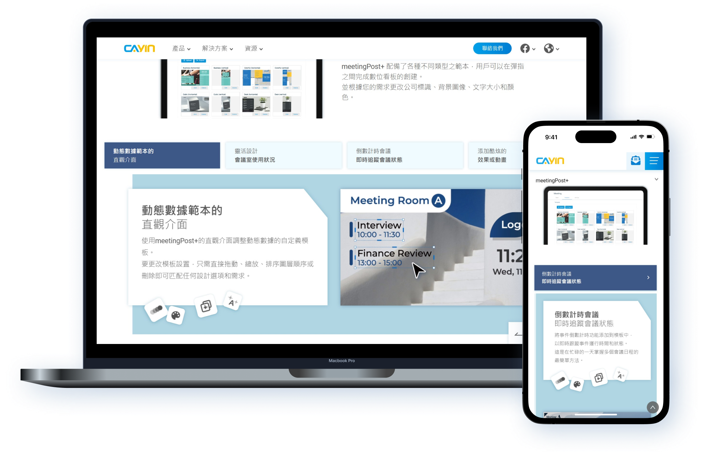
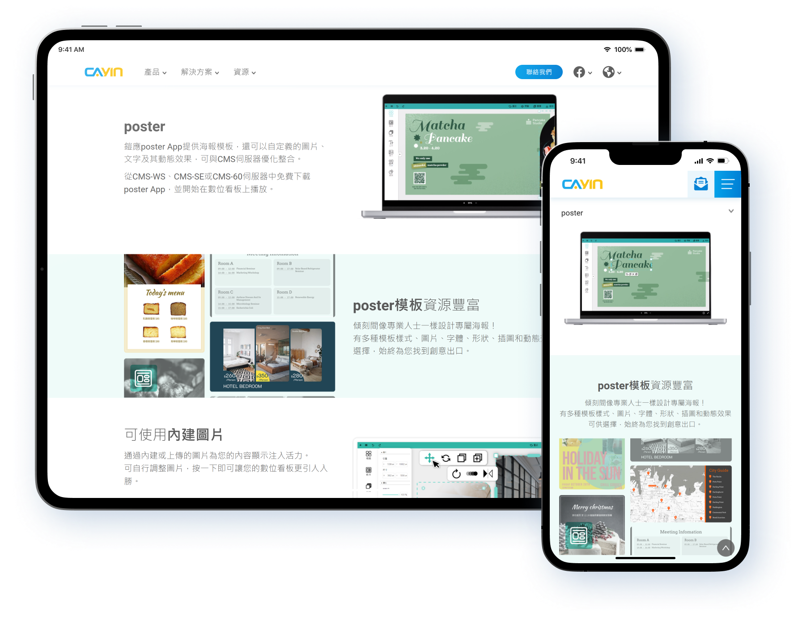
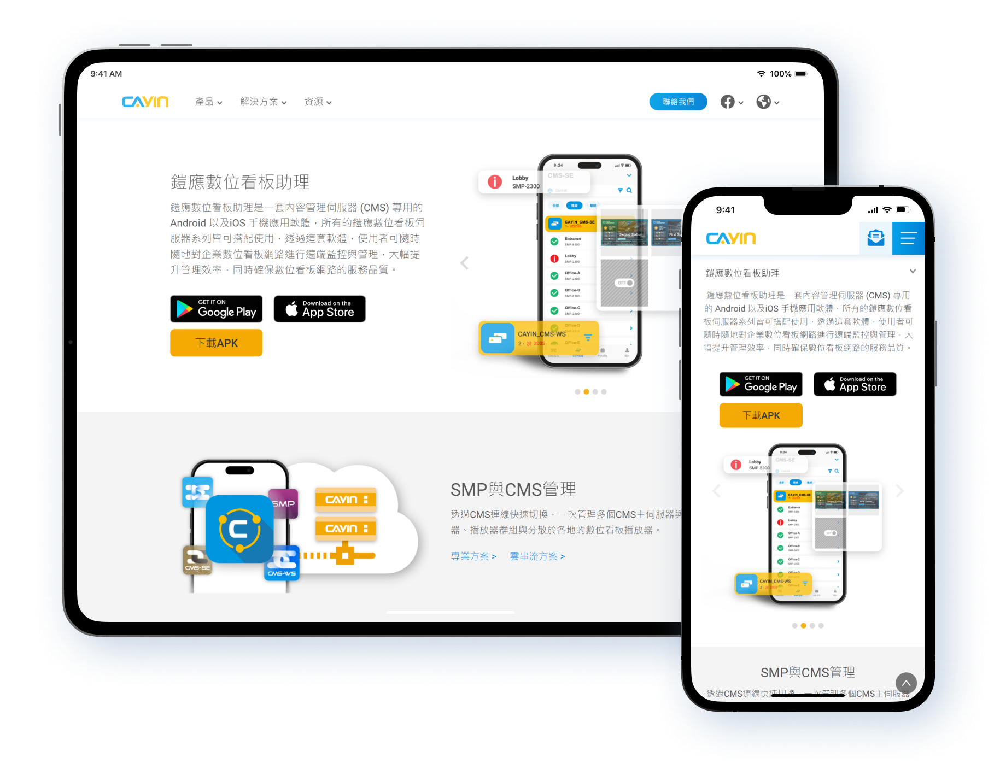
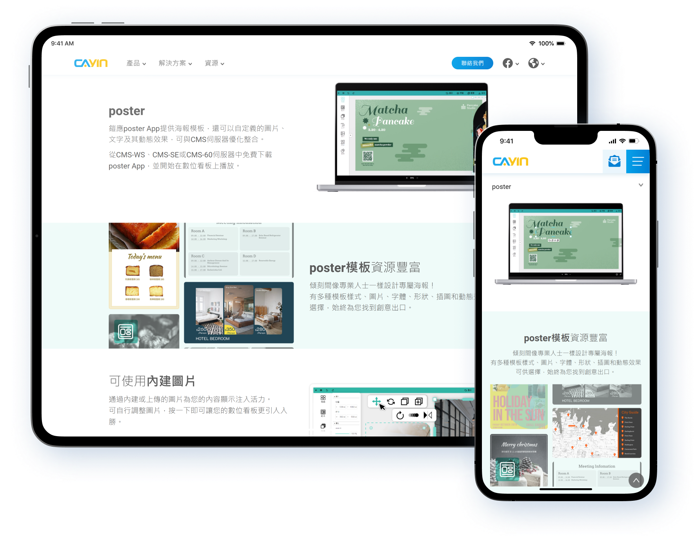
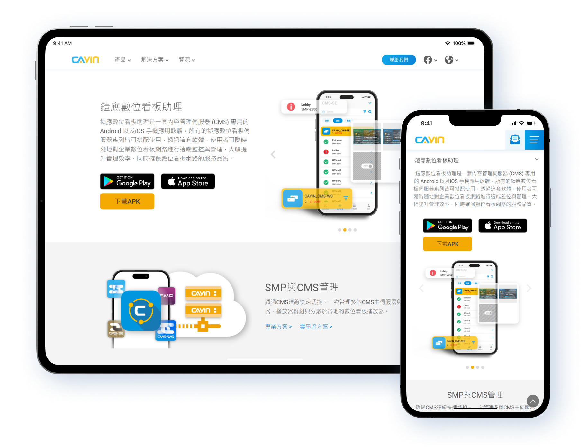
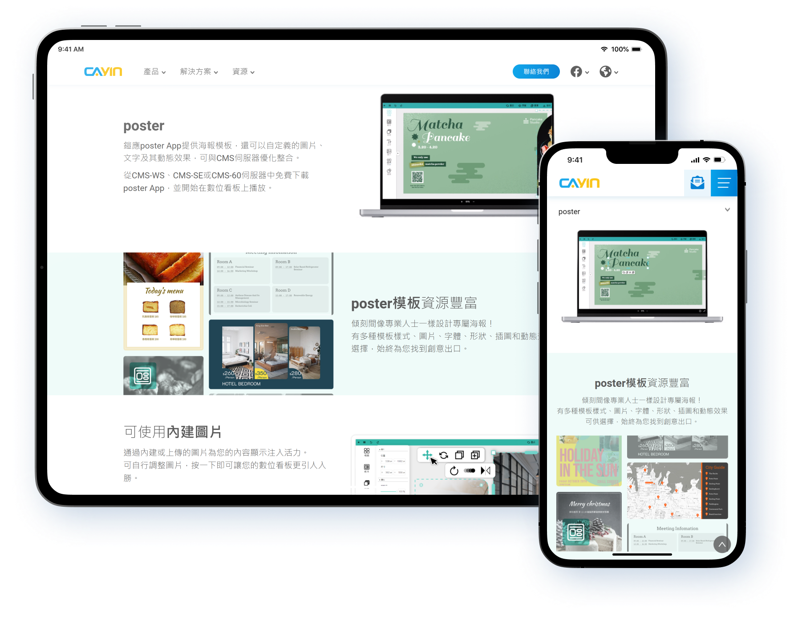
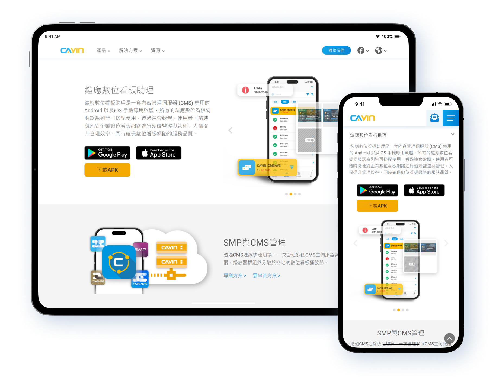

專案背景
鎧應科技是一家以數位廣告看板播放器/伺服器/軟體為主要銷售產品的公司，依據產品特性面向專業級用戶、或是個人用戶，依據目標客群的不同商品頁面也強調不同的特性。
產品包含以下幾個 : 會議室管理軟體「 meetingPost+」、伺服器管理系統「 CMS-WS」、海報編輯軟體「 poster」、以及手機遠端管理助理「 Signage Assistant」。
專案目標
該專案總共含有兩個面向的產品，分別是以專業級用戶為目標客群的「 meetingPost+」，以及以小型用戶為目標客群的「 CMS-WS」、「 poster」、「 Signage Assistant」:
專業級用戶導向:
該面向的目標客戶為企業或大型連鎖商店，該類型用戶通常擁有數十個數位廣告看板，且由多個員工同時進行管理及操作，因此注重於宣傳該產品的中央管理功能、資訊安全性、以及跨平台整合度。
小型用戶導向:
該面向的目標客戶為小型公司或零售店家，該類型用戶通常只擁有10個以下的數位廣告看板，且由單人進行操作，因此注重於宣傳該產品的操作簡易性、以及可於移動裝置上使用的便利性。
設計細節


為了展現該產品功能多元且整合多個平台，因此使用分頁及輪播的方式展現數量，同時讓介紹更為清楚。


使用向量插圖的方式簡化伺服器管理系統中複雜的UI畫面，讓觀看的顧客能更快速理解該產品的管理性能以及監控系統。
大量使用短影片讓使用者能感受到該產品的操作簡易性，以及短時間內就能完成的快速性。
設計展示

 




